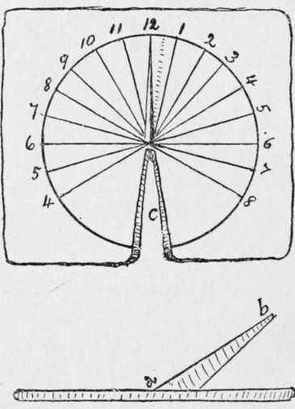

When Lost In The Woods
Description
This section is from the book "The Book Of Woodcraft", by Ernest Thompson Seton. Also available from Amazon: The Book of Woodcraft.
When Lost In The Woods
If you should miss your way, the first thing to remember is, like the Indian, "You are not lost; it is the teepee that is lost." It isn't serious. It cannot be so, unless you do something foolish.
The first and most natural thing to do is to get on a hill, up a tree, or other high lookout, and seek for some landmark near the camp. You may be so sure of these things:
You are not nearly as far from camp as you think you are.
Your friends will soon find you.
You can help them best by signaling.
The worst thing you can do is to get frightened. The truly dangerous enemy is not the cold or the hunger, so much as the fear. It is fear that robs the wanderer of his judgment and of his limb power; it is fear that turns the passing experience into a final tragedy. Only keep cool and all will be well.
If there is snow on the ground, you can follow your back track.
If you see no landmark, look for the smoke of the fire. Shout from time to time, and wait; for though you have been away for hours it is quite possible you are within earshot of your friends. If you happen to have a gun, fire it off twice in quick succession on your high lookout then wait and listen. Do this several times and wait plenty long enough, perhaps an hour. If this brings no help, send up a distress signal - that is, make two smoke fires by smothering two bright fires with green leaves and rotten wood, and keep them at least fifty feet apart, or the wind will confuse them. Two shots or two smokes are usually understood to mean "I am in trouble." Those in camp on seeing this should send up one smoke, which means " Camp is here".
In a word, "keep cool, make yourself comfortable, leave a record of your travels, and help your friends to find you".
Indian Tweezers
Oftentimes, a camper may need a pair of tweezers or forceps to pull out a thorn or catch some fine end. If he happens to be without the real thing, he can supply the place with those of Indian style - these are simply a small pair of clam-shells, with edges clean and hinge unbroken.
The old-time Indians had occasionally a straggly beard. They had no razor, but they managed to do without one. As a part of their toilet for special occasion they pulled out each hair by means of the clamshell nippers.
A Home Made Compass
If you happen to have a magnet, it is easy to make a compass. Rub a fine needle on the magnet; then on the side of your nose. Then lay it gently on the surface of a cup full of water. The needle will float and point north.
The cup must not be of metal.
An Indian Clock, Shadow Clock Or Sundial
To make an Indian shadow clock or sundial, prepare a smooth board about fifteen inches across, with a circle divided by twenty-four rays into equal parts. Place it on a level, solid post or stump in the open. At night set the dial so that the twelve o'clock line points exactly north, as determined by the Pole Star and nail it down. Then, fix a stick or pointer with its upper edge on the centre and set it exactly pointing to the Pole Star (a b); that is, the same angle as the latitude of the place, and fix it there immovably; it may be necessary to cut a notch (c) in the board to permit of a sight line. The hours eight at night to four next morning may as well be painted black. As a timepiece, this shadow clock will be found roughly correct.
The Indians of course used merely the shadow of a tree, or the sun streak that fell on the lodge floor through the smoke opening.
Lights
For camp use, there is nothing better than the Stone-bridge folding lantern, with a good supply of candles. A temporary torch can readily be made of a roll of birch bark, a pine knot, or some pine-root slivers, in a split stick of green wood.
Hunter's Lamp
A fairly steady light can be made of a piece of cotton cloth or twisted rag, stuck in a clam-shell full of oil or melted grease. An improvement is easily made by putting the cotton wick through a hole in a thin, flat stone, which sets in the grease and holds the wick upright.
Another improvement is made by using a tin in place of the shell. It makes a steadier lamp, as well as a much larger light. This kind of a lamp enjoys wide use and has some queer names, such as slot-lamp, grease-jet, hunter's lamp, etc. (See cut on next page).
Continue to:
- prev: The Planets
- Table of Contents
- next: Woodman's Lantern
Tags
bookdome.com, books, online, free, old, antique, new, read, browse, download